、 、
译者
@SeanCheney ：
强化学习
DeepMind 是怎么做到的呢
学习优化奖励
在强化学习中
这是一个相当广泛的设置
-
智能体可以是控制一个机器人的程序
。 ， ， ， 。 ， ， ， 。 -
智能体可以是控制 Ms.Pac-Man 的程序
。 ， ， （ ） ， ， 。 -
相似地
， ， 。 -
智能体也可以不用去控制一个实体
（ ） 。 ， ， ， 。 -
智能体也可以去观测股票市场价格以实时决定买卖
。 。
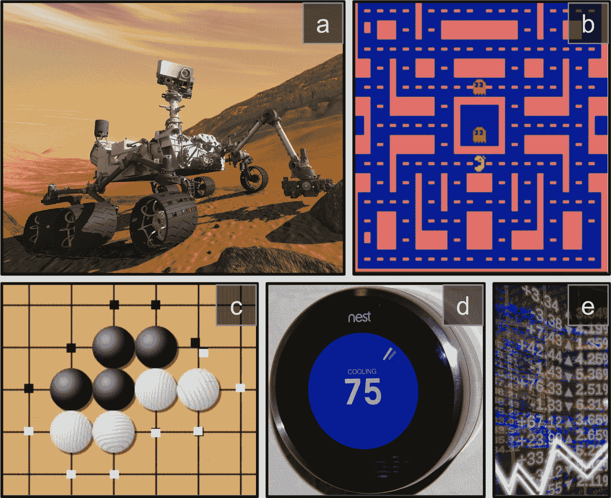
图 18-1 强化学习案例
其实没有正奖励也是可以的
策略搜索
智能体用于改变行为的算法称为策略
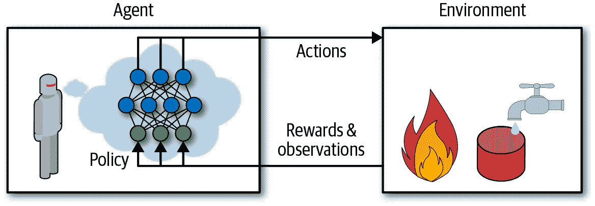
图 18-2 用神经网络策略做加强学习
这个策略可以是你能想到的任何算法p向前移动1-p随机地向左或向右旋转-r和+r之间的随机角度
怎么训练这样的机器人p和角度范围r
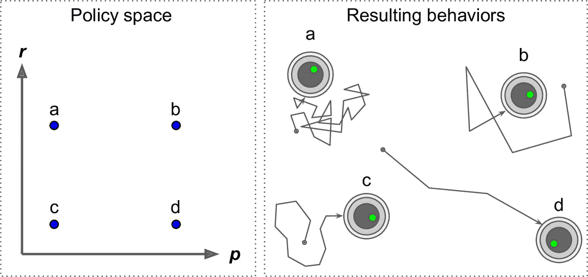
图 18-3 策略空间中的四个点以及机器人的对应行为
另一种搜寻策略空间的方法是遗传算法
另一种方法是使用优化技术pp
OpenAI Gym 介绍
强化学习的一个挑战是
OpenAI Gym 是一个工具包
安装之前
$ cd $ML_PATH # 工作目录 (e.g., $HOME/ml)
$ source my_env/bin/activate # Linux or MacOS
$ .\my_env\Scripts\activate # Windows
接下来安装 OpenAI gympip安装
$ python3 -m pip install --upgrade gym
取决于系统apt install libglu1-mesamake()创建一个环境
>>> import gym
>>> env = gym.make("CartPole-v1")
>>> obs = env.reset()
>>> obs
array([-0.01258566, -0.00156614, 0.04207708, -0.00180545])
这里创建了一个 CartPole 环境gym.envs.registry.all()获得所有可用的环境reset()初始化
用render()方法展示环境
>>> env.render()
True
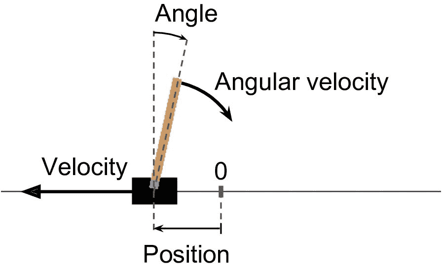
图 18-4 CartPole 环境
提示
如果你在使用无头服务器 ： 即 （ 没有显示器 ， ） 比如云上的虚拟机 ， 渲染就会失败 ， 解决的唯一方法是使用假 X server 。 比如 Xvfb 或 Xdummy ， 例如 。 装好 Xvfb 之后 ， Ubuntu 或 Debian 上运行 （ apt install xvfb） 用这条命令启动 Python ， ： xvfb-run -s "-screen 0 1400x900x24" python3或者 。 安装 Xvfb 和 ， pyvirtualdisplay库这个库包装了 Xvfb （ ） 在程序启动处运行 ， pyvirtualdisplay.Display(visible=0, size=(1400, 900)).start()。
如果你想让render()让图像以一个 Numpy 数组格式返回mode参数设置为rgb_array
>>> img = env.render(mode="rgb_array")
>>> img.shape # height, width, channels (3=RGB)
(800, 1200, 3)
询问环境
>>> env.action_space
Discrete(2)
Discrete(2)的意思是可能的行动是整数 0 和 1obs[2] > 0
>>> action = 1 # accelerate right
>>> obs, reward, done, info = env.step(action)
>>> obs
array([-0.01261699, 0.19292789, 0.04204097, -0.28092127])
>>> reward
1.0
>>> done
False
>>> info
{}
step()方法执行给定的动作并返回四个值
obs:
这是新的观测obs[1]>0obs[2]>0obs[3]<0
reward
在这个环境中
done
当游戏结束时这个值会为True
info
该字典可以在其他环境中提供额外信息用于调试或训练
提示
使用完环境后 ： 应当调用它的 ， close()方法释放资源。
让我们硬编码一个简单的策略
def basic_policy(obs):
angle = obs[2]
return 0 if angle < 0 else 1
totals = []
for episode in range(500):
episode_rewards = 0
obs = env.reset()
for step in range(200):
action = basic_policy(obs)
obs, reward, done, info = env.step(action)
episode_rewards += reward
if done:
break
totals.append(episode_rewards)
这段代码不难
>>> import numpy as np
>>> np.mean(totals), np.std(totals), np.min(totals), np.max(totals)
(41.718, 8.858356280936096, 24.0, 68.0)
即使有 500 次尝试
神经网络策略
让我们创建一个神经网络策略p1 - p
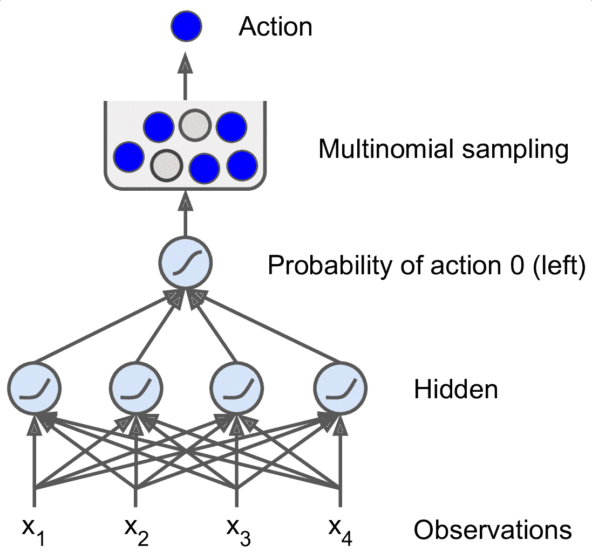
图 18-5 神经网络策略
你可能奇怪为什么我们根据神经网络给出的概率来选择随机的动作
还要注意
下面是用tf.keras创建这个神经网络策略的代码
import tensorflow as tf
from tensorflow import keras
n_inputs = 4 # == env.observation_space.shape[0]
model = keras.models.Sequential([
keras.layers.Dense(5, activation="elu", input_shape=[n_inputs]),
keras.layers.Dense(1, activation="sigmoid"),
])
在导入之后Sequential模型定义策略网络
好了
： ：
如果我们知道每一步的最佳动作
为了解决这个问题rr=0.810 +r×0 + r2×(-50)=-22的分数0.9513×0.5
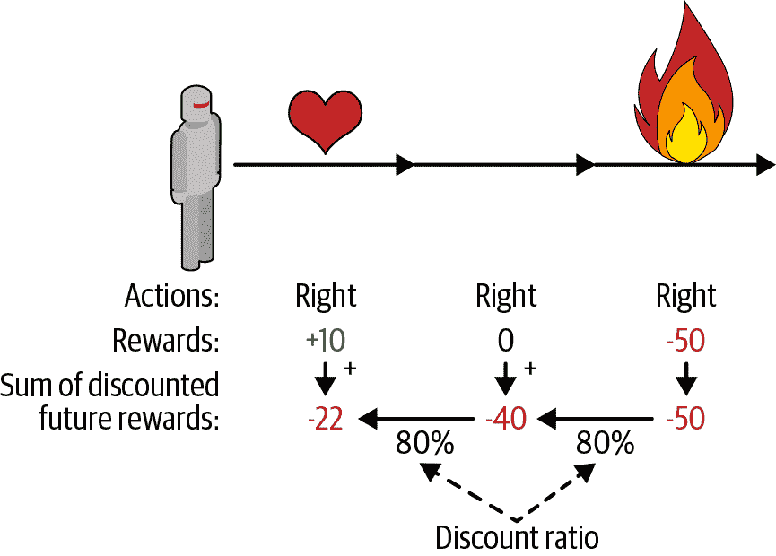
图 18-6 计算行动的回报
当然
策略梯度
正如前面所讨论的
-
首先
， ， ， ， 。 -
运行几次后
， （ ） 。 -
如果一个动作的分数是正的
， ， ， 。 ， ， ， 。 。 -
最后
， ， 。
让我们使用tf.keras实现这个算法
def play_one_step(env, obs, model, loss_fn):
with tf.GradientTape() as tape:
left_proba = model(obs[np.newaxis])
action = (tf.random.uniform([1, 1]) > left_proba)
y_target = tf.constant([[1.]]) - tf.cast(action, tf.float32)
loss = tf.reduce_mean(loss_fn(y_target, left_proba))
grads = tape.gradient(loss, model.trainable_variables)
obs, reward, done, info = env.step(int(action[0, 0].numpy()))
return obs, reward, done, grads
逐行看代码
-
在
GradientTape代码块内， ， （ ） 。 。 -
然后
， ， left_proba。 left_proba时， action是False； 1-left_proba时， action是True。 ， （ ） （ ） 。 -
接着
， ： （ ） 。 （ ） ， 。 （ ） ， 。 -
然后使用损失函数计算损失
， 。 ， 。 -
最后
， ， ， 、 ， 。
现在play_one_step()的多次执行函数
def play_multiple_episodes(env, n_episodes, n_max_steps, model, loss_fn):
all_rewards = []
all_grads = []
for episode in range(n_episodes):
current_rewards = []
current_grads = []
obs = env.reset()
for step in range(n_max_steps):
obs, reward, done, grads = play_one_step(env, obs, model, loss_fn)
current_rewards.append(reward)
current_grads.append(grads)
if done:
break
all_rewards.append(current_rewards)
all_grads.append(current_grads)
return all_rewards, all_grads
这段代码返回了奖励列表
算法会使用play_multiple_episodes()函数
def discount_rewards(rewards, discount_factor):
discounted = np.array(rewards)
for step in range(len(rewards) - 2, -1, -1):
discounted[step] += discounted[step + 1] * discount_factor
return discounted
def discount_and_normalize_rewards(all_rewards, discount_factor):
all_discounted_rewards = [discount_rewards(rewards, discount_factor)
for rewards in all_rewards]
flat_rewards = np.concatenate(all_discounted_rewards)
reward_mean = flat_rewards.mean()
reward_std = flat_rewards.std()
return [(discounted_rewards - reward_mean) / reward_std
for discounted_rewards in all_discounted_rewards]
检测其是否有效
>>> discount_rewards([10, 0, -50], discount_factor=0.8)
array([-22, -40, -50])
>>> discount_and_normalize_rewards([[10, 0, -50], [10, 20]],
... discount_factor=0.8)
...
[array([-0.28435071, -0.86597718, -1.18910299]),
array([1.26665318, 1.0727777 ])]
调用discount_rewards()discount_and_normalize_rewards()返回了每个周期每个步骤的归一化的行动的结果
可以准备运行算法了
n_iterations = 150
n_episodes_per_update = 10
n_max_steps = 200
discount_factor = 0.95
还需要一个优化器和损失函数
optimizer = keras.optimizers.Adam(lr=0.01)
loss_fn = keras.losses.binary_crossentropy
接下来创建和运行训练循环
for iteration in range(n_iterations):
all_rewards, all_grads = play_multiple_episodes(
env, n_episodes_per_update, n_max_steps, model, loss_fn)
all_final_rewards = discount_and_normalize_rewards(all_rewards,
discount_factor)
all_mean_grads = []
for var_index in range(len(model.trainable_variables)):
mean_grads = tf.reduce_mean(
[final_reward * all_grads[episode_index][step][var_index]
for episode_index, final_rewards in enumerate(all_final_rewards)
for step, final_reward in enumerate(final_rewards)], axis=0)
all_mean_grads.append(mean_grads)
optimizer.apply_gradients(zip(all_mean_grads, model.trainable_variables))
逐行看下代码
-
在每次训练迭代
， play_multiple_episodes()， ， 。 -
然后调用
discount_and_normalize_rewards()计算每个动作的归一化结果（ final_reward） 。 。 -
接着
， ， ， final_reward。 -
最后
， ： 。
就是这样
提示
研究人员试图找到一种即使当智能体最初对环境一无所知时也能很好工作的算法 ： 然而 。 除非你正在写论文 ， 否则你应该尽可能多地将先前的知识注入到智能体中 ， 因为它会极大地加速训练 ， 例如 。 因为知道棍子要尽量垂直 ， 你可以添加与棍子角度成正比的负奖励 ， 这可以让奖励不那么分散 。 是训练加速 ， 此外 。 如果你已经有一个相当好的策略 ， 你可以训练神经网络模仿它 ， 然后使用策略梯度来改进它 ， 。
尽管它相对简单
现在我们来看看另一个流行的算法族
马尔可夫决策过程
在二十世纪初S演变为状态S'的概率是固定的(S, S')对
图 18-7 展示了一个具有四个状态的马尔可夫链的例子S0开始S0S1S2S1S3并永远留在那里
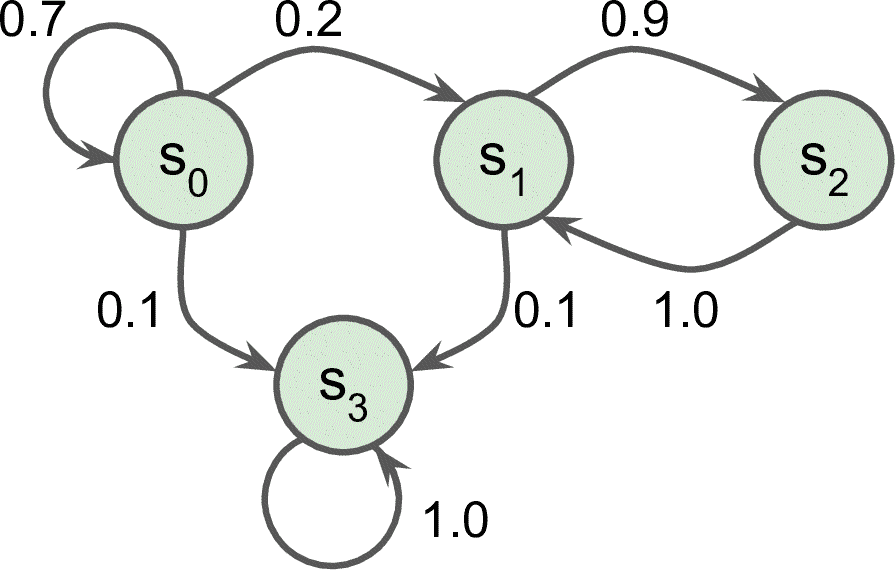
图 18-7 马尔科夫链案例
马尔可夫决策过程最初是在 20 世纪 50 年代由 Richard Bellman 描述的
例如
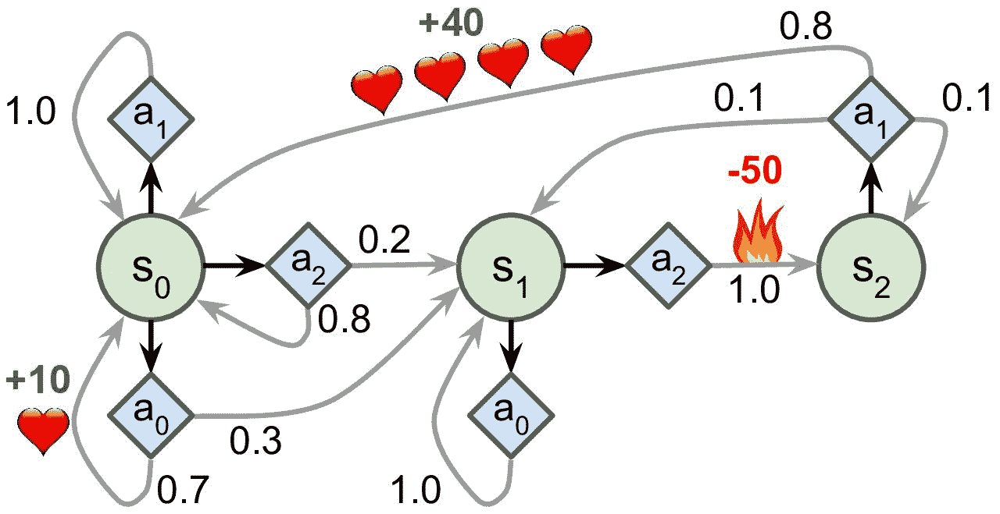
图 18-8 马尔科夫决策过程案例
如果从状态S0开始A0A1或A2之间进行选择A1S0中A0S0S1中结束这样的行为S1中A0或A2A0来选择停留A2移动到状态S2并得到 -50 奖励S2中A1之外S0S0中A0是最好的选择S2中A1S1中A0A2
贝尔曼找到了一种估计任何状态S的最佳状态值的方法V(s)s后所有衰减未来奖励的总和的平均期望
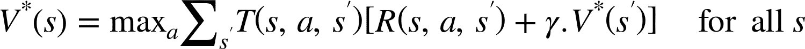
公式 18-1 贝尔曼最优性公式
其中
-
T(s, a, s′)为智能体选择动作a时从状态s到状态s'的概率。 ， ， T(s2, a1, s0) = 0.8。 -
R(s, a, s′)为智能体选择以动作a从状态s到状态s'的过程中得到的奖励。 ， R(s2, a1, s0) = +40。 -
γ为衰减率。
这个等式直接引出了一种算法
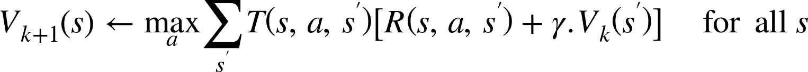
公式 18-2 数值迭代算法
在这个公式中V[k](s)是在k次算法迭代对状态s的估计
笔记
该算法是动态规划的一个例子 ： 它将了一个复杂的问题 ， 在这种情况下 （ 估计潜在的未来衰减奖励的总和 ， 变为可处理的子问题 ） 可以迭代地处理 ， 在这种情况下 （ 找到最大化平均报酬与下一个衰减状态值的和的动作 ， ）
了解最佳状态值可能是有用的(S, A)对的最优 Q 值Q*(s, a)SA之后平均衰减未来奖励的期望的总和
下面是它的工作原理
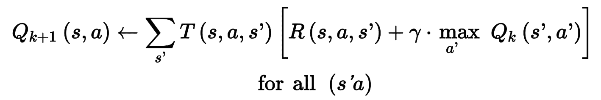
公式 18-3 Q 值迭代算法
一旦你有了最佳的 Q 值π*(s)S时
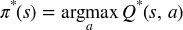
让我们把这个算法应用到图 18-8 所示的 MDP 中
transition_probabilities = [ # shape=[s, a, s']
[[0.7, 0.3, 0.0], [1.0, 0.0, 0.0], [0.8, 0.2, 0.0]],
[[0.0, 1.0, 0.0], None, [0.0, 0.0, 1.0]],
[None, [0.8, 0.1, 0.1], None]]
rewards = [ # shape=[s, a, s']
[[+10, 0, 0], [0, 0, 0], [0, 0, 0]],
[[0, 0, 0], [0, 0, 0], [0, 0, -50]],
[[0, 0, 0], [+40, 0, 0], [0, 0, 0]]]
possible_actions = [[0, 1, 2], [0, 2], [1]]
例如a1s2到s0的过渡概率transition_probabilities[2][1][0]rewards[2][1][0]s2的可能的动作possible_actions[2]a1–∞
Q_values = np.full((3, 3), -np.inf) # -np.inf for impossible actions
for state, actions in enumerate(possible_actions):
Q_values[state, actions] = 0.0 # for all possible actions
现在运行 Q 值迭代算法
gamma = 0.90 # the discount factor
for iteration in range(50):
Q_prev = Q_values.copy()
for s in range(3):
for a in possible_actions[s]:
Q_values[s, a] = np.sum([
transition_probabilities[s][a][sp]
* (rewards[s][a][sp] + gamma * np.max(Q_prev[sp]))
for sp in range(3)])
Q 值的结果如下
>>> Q_values
array([[18.91891892, 17.02702702, 13.62162162],
[ 0\. , -inf, -4.87971488],
[ -inf, 50.13365013, -inf]])
例如s0a1
对于每个状态
>>> np.argmax(Q_values, axis=1) # optimal action for each state
array([0, 0, 1])
这样就得到了衰减因子等于 0.9 时s0时选择动作a0s1时选择动作a0s2时选择动作a1s1时a2
时间差分学习
具有离散动作的强化学习问题通常可以被建模为马尔可夫决策过程T(s, a, s′)R(s, a, s′)
时间差分学习
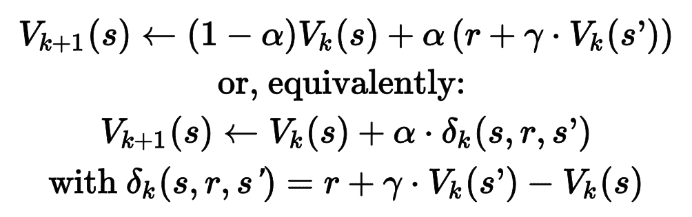
公式 18-4 TD 学习算法
在这个公式中
-
α是学习率（ ） 。 -
r + γ · Vk(s′)被称为 TD 目标。 -
δk(s, r, s′)被称为 TD 误差。
公式的第一种形式的更为准确的表达
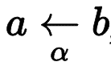
它的意思是ak+1 ← (1 – α) · ak + α ·bk
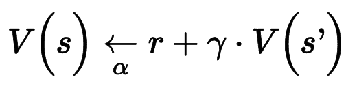
提示
TD 学习和随机梯度下降有许多相似点 ： 特别是 TD 学习每次只处理一个样本 ， 另外 。 和随机梯度下降一样 ， 如果逐渐降低学习率 ， 是能做到收敛的 ， 否则 （ 会在最佳 Q 值附近反复跳跃 ， ） 。
对于每个状态S
Q 学习
类似地
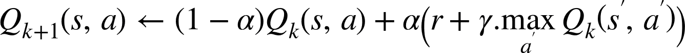
公式 18-5 Q 学习算法
对于每一个状态动作对(s,a)A离开状态S时获得的即时奖励平均值R
以下是如何实现 Q 学习算法
def step(state, action):
probas = transition_probabilities[state][action]
next_state = np.random.choice([0, 1, 2], p=probas)
reward = rewards[state][action][next_state]
return next_state, reward
现在
def exploration_policy(state):
return np.random.choice(possible_actions[state])
然后
alpha0 = 0.05 # initial learning rate
decay = 0.005 # learning rate decay
gamma = 0.90 # discount factor
state = 0 # initial state
for iteration in range(10000):
action = exploration_policy(state)
next_state, reward = step(state, action)
next_value = np.max(Q_values[next_state])
alpha = alpha0 / (1 + iteration * decay)
Q_values[state, action] *= 1 - alpha
Q_values[state, action] += alpha * (reward + gamma * next_value)
state = next_state
算法会覆盖最优 Q 值
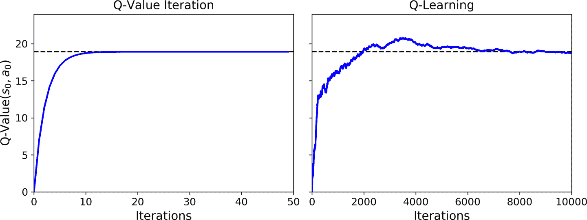
图 18-9 Q 值迭代算法
Q 学习被称为离线策略算法
探索策略
当然ε随机地或以概率为1-ε贪婪地选择具有最高 Q 值的动作ε为很高的值
或者
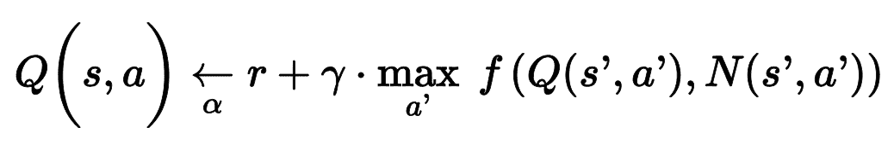
公式 18-6 使用探索函数的 Q 学习
在这个公式中
-
N(s′, a′)计算了在状态s时选择动作a的次数 -
f(Q, N)是一个探索函数， f(Q, N) = Q + κ/(1 + N)， κ是一个好奇超参数， 。
近似 Q 学习和深度 Q 学习
Q 学习的主要问题是21^50 ≈ 10^45
解决方案是找到一个函数Q[θ](s,a)
如何训练 DQN 呢(s,a)s执行动作a的奖励rs'a'执行 DQNr和未来衰减奖励估计相加(s, a)的目标 Q 值y(s, a)
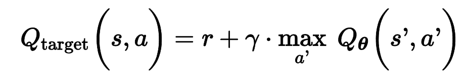
公式 18-7 目标 Q 值
有了这个目标 Q 值Q(s, a)和目标 Q 值的平方根方差
实现深度 Q 学习
首先需要的是一个深度 Q 网络
env = gym.make("CartPole-v0")
input_shape = [4] # == env.observation_space.shape
n_outputs = 2 # == env.action_space.n
model = keras.models.Sequential([
keras.layers.Dense(32, activation="elu", input_shape=input_shape),
keras.layers.Dense(32, activation="elu"),
keras.layers.Dense(n_outputs)
])
使用这个 DQN 选择一个动作
def epsilon_greedy_policy(state, epsilon=0):
if np.random.rand() < epsilon:
return np.random.randint(2)
else:
Q_values = model.predict(state[np.newaxis])
return np.argmax(Q_values[0])
不仅只根据最新的经验训练 DQN
from collections import deque
replay_buffer = deque(maxlen=2000)
提示
双端列表是一个链表 ： 每个元素指向后一个和前一个元素 ， 插入和删除元素都非常快 。 但双端列表越长 ， 随机访问越慢 ， 如果需要一个非常大的接力缓存 。 可以使用环状缓存 ， 见笔记本中的 ； Deque vs Rotating List章节。
每个经验包含五个元素done
def sample_experiences(batch_size):
indices = np.random.randint(len(replay_buffer), size=batch_size)
batch = [replay_buffer[index] for index in indices]
states, actions, rewards, next_states, dones = [
np.array([experience[field_index] for experience in batch])
for field_index in range(5)]
return states, actions, rewards, next_states, dones
再创建一个使用ε 贪婪策略的单次玩游戏函数
def play_one_step(env, state, epsilon):
action = epsilon_greedy_policy(state, epsilon)
next_state, reward, done, info = env.step(action)
replay_buffer.append((state, action, reward, next_state, done))
return next_state, reward, done, info
最后
batch_size = 32
discount_factor = 0.95
optimizer = keras.optimizers.Adam(lr=1e-3)
loss_fn = keras.losses.mean_squared_error
def training_step(batch_size):
experiences = sample_experiences(batch_size)
states, actions, rewards, next_states, dones = experiences
next_Q_values = model.predict(next_states)
max_next_Q_values = np.max(next_Q_values, axis=1)
target_Q_values = (rewards +
(1 - dones) * discount_factor * max_next_Q_values)
mask = tf.one_hot(actions, n_outputs)
with tf.GradientTape() as tape:
all_Q_values = model(states)
Q_values = tf.reduce_sum(all_Q_values * mask, axis=1, keepdims=True)
loss = tf.reduce_mean(loss_fn(target_Q_values, Q_values))
grads = tape.gradient(loss, model.trainable_variables)
optimizer.apply_gradients(zip(grads, model.trainable_variables))
逐行看下代码
-
首先定义一些超参数
， 。 -
然后创建
training_step()函数。 ， 。 ， 。 ， 。 -
接着
， 。 ， ， 。 ， 。 tf.one_hot()函数可以方便地将动作下标的数组转别为掩码。 ， ， ， ， [[0, 1], [0, 1], [1, 0],...]开头。 ， 。 ， ， ， 。 Q_values， 。 -
然后
， ： 。 -
最后
， ， 。
这是最难的部分
for episode in range(600):
obs = env.reset()
for step in range(200):
epsilon = max(1 - episode / 500, 0.01)
obs, reward, done, info = play_one_step(env, obs, epsilon)
if done:
break
if episode > 50:
training_step(batch_size)
跑 600 次游戏epsilon值play_one_step()函数training_step()函数
图 18-10 展示了智能体在每个周期获得的总奖励
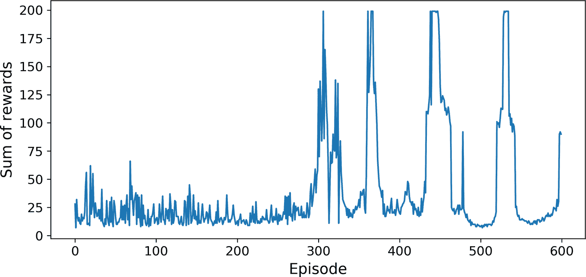
图 18-10 深度 Q 学习算法的学习曲线
可以看到
笔记
强化学习非常困难 ： 很大程度是因为训练的不稳定性 ， 以及巨大的超参数和随机种子的不稳定性 ， 就像 Andrej Karpathy 说的 。 ： 监督学习自己就能工作 “ 强化学习被迫工作 ， ” 你需要时间 。 耐心 、 毅力 、 还有一点运气 ， 这是为什么强化学习不是常用的深度学习算法的原因 。 除了 AlphaGo 和 Atari 游戏 。 还有一些其它应用 ， 例如 ： Google 使用 RL 优化数据中心的费用 ， 也用于一些机器人应用的超参数调节 ， 和推荐系统 ， 。
你可能想为什么我们不画出损失
我们现在学的基本的深度 Q 学习算法
深度 Q 学习的变体
下面看几个深度 Q 学习算法的变体
固定 Q 值目标
在基本的深度 Q 学习算法中
target = keras.models.clone_model(model)
target.set_weights(model.get_weights())
然后training_step()函数中
next_Q_values = target.predict(next_states)
最后
if episode % 50 == 0:
target.set_weights(model.get_weights())
因为目标模型更新的没有在线模型频繁epsilon降低的很慢
本章后面会用这些超参数
双 DQN
在 2015 年的论文中training_step()函数
def training_step(batch_size):
experiences = sample_experiences(batch_size)
states, actions, rewards, next_states, dones = experiences
next_Q_values = model.predict(next_states)
best_next_actions = np.argmax(next_Q_values, axis=1)
next_mask = tf.one_hot(best_next_actions, n_outputs).numpy()
next_best_Q_values = (target.predict(next_states) * next_mask).sum(axis=1)
target_Q_values = (rewards +
(1 - dones) * discount_factor * next_best_Q_values)
mask = tf.one_hot(actions, n_outputs)
[...] # the rest is the same as earlier
几个月之后
优先经验接力
除了均匀地从接力缓存采样经验
更具体的δ = r + γ·V(s′) – V(s)(s, r, s′)很值得学习δp = |δ|p的概率P正比于p[ζ]ζ是调整采样贪婪度的超参数ζ=0时ζ=1时ζ=0.6
但有一点要注意w = (n P)^(–β)n是接力缓存的经验数β是平衡重要性偏向的超参数β=0.4β=1
接下来是最后一个重要的 DQN 算法的变体
决斗 DQN
决斗 DQN 算法(s, a)的 Q 值Q(s, a) = V(s) + A(s, a)V(s)是状态s的值A(s, a)是状态s采取行动a的结果a*的 Q 值V(s) = Q(s, a*)A(s, a*) = 0
K = keras.backend
input_states = keras.layers.Input(shape=[4])
hidden1 = keras.layers.Dense(32, activation="elu")(input_states)
hidden2 = keras.layers.Dense(32, activation="elu")(hidden1)
state_values = keras.layers.Dense(1)(hidden2)
raw_advantages = keras.layers.Dense(n_outputs)(hidden2)
advantages = raw_advantages - K.max(raw_advantages, axis=1, keepdims=True)
Q_values = state_values + advantages
model = keras.Model(inputs=[input_states], outputs=[Q_values])
算法的其余部分和之前一样
不过
TF-Agents 库
TF-Agents 库是基于 TensorFlow 实现的强化学习库
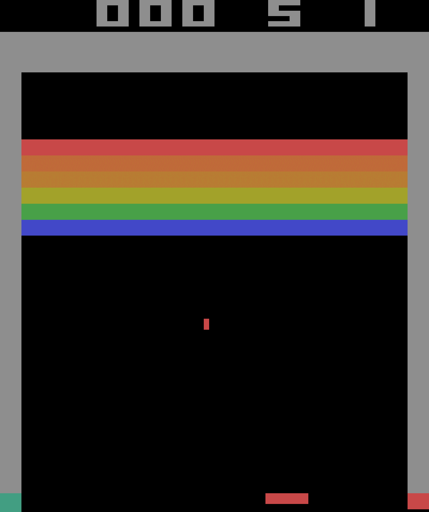
图 18-11 Breakout 游戏
安装 TF-Agents
先安装 TF-Agents --user
$ python3 -m pip install --upgrade tf-agents
警告
写作本书时 ： TF-Agents 还很新 ， 每天都有新进展 ， 因此 API 可能会和现在有所不同 —— 但大体相同 ， 如果代码不能运行 。 我会更新 Jupyter 笔记本 ， 。
然后
$ python3 -m pip install --upgrade 'gym[atari]'
这条命令安装了atari-py
TF-Agents 环境
如果一切正常
>>> from tf_agents.environments import suite_gym
>>> env = suite_gym.load("Breakout-v4")
>>> env
<tf_agents.environments.wrappers.TimeLimit at 0x10c523c18>
这是 OpenAI Gym 环境的包装gym访问
>>> env.gym
<gym.envs.atari.atari_env.AtariEnv at 0x24dcab940>
TF-Agents 环境和 OpenAI Gym 环境非常相似reset()方法不返回观察TimeStep对象
>>> env.reset()
TimeStep(step_type=array(0, dtype=int32),
reward=array(0., dtype=float32),
discount=array(1., dtype=float32),
observation=array([[[0., 0., 0.], [0., 0., 0.],...]]], dtype=float32))
step()方法返回的也是TimeStep对象
>>> env.step(1) # Fire
TimeStep(step_type=array(1, dtype=int32),
reward=array(0., dtype=float32),
discount=array(1., dtype=float32),
observation=array([[[0., 0., 0.], [0., 0., 0.],...]]], dtype=float32))
属性reward和observation是奖励和观察reward表示为 NumPy 数组step_type等于 0is_last()方法discount属性指明了在这个时间步的衰减率discount参数
笔记
在任何时候 ： 你可以通过调用方法 ， current_time_step() method.访问环境的当前时间步。
环境配置
TF-Agents 环境提供了配置
>>> env.observation_spec()
BoundedArraySpec(shape=(210, 160, 3), dtype=dtype('float32'), name=None,
minimum=[[[0\. 0\. 0.], [0\. 0\. 0.],...]],
maximum=[[[255., 255., 255.], [255., 255., 255.], ...]])
>>> env.action_spec()
BoundedArraySpec(shape=(), dtype=dtype('int64'), name=None,
minimum=0, maximum=3)
>>> env.time_step_spec()
TimeStep(step_type=ArraySpec(shape=(), dtype=dtype('int32'), name='step_type'),
reward=ArraySpec(shape=(), dtype=dtype('float32'), name='reward'),
discount=BoundedArraySpec(shape=(), ..., minimum=0.0, maximum=1.0),
observation=BoundedArraySpec(shape=(210, 160, 3), ...))
可以看到[210, 160, 3]的 NumPy 数组表示env.render(mode="human")env.render(mode="rgb_array")
有四个可能的动作
>>> env.gym.get_action_meanings()
['NOOP', 'FIRE', 'RIGHT', 'LEFT']
提示
配置是配置类的一个实例 ： 可以是嵌套列表 ， 字典 、 如果配置是嵌套的 。 则配置对象必须匹配配置的嵌套结构 ， 例如 。 如果观察配置是 ， {"sensors": ArraySpec(shape=[2]), "camera": ArraySpec(shape=[100, 100])}有效观察应该是 ， {"sensors": np.array([1.5, 3.5]), "camera": np.array(...)}。 tf.nest包提供了工具处理嵌套结构即 （ ， nests） 。
观察结果很大
环境包装器和 Atari 预处理
TF-Agents 在tf_agents.environments.wrappers中
ActionClipWrapper
- 根据动作配置裁剪动作
。
ActionDiscretizeWrapper
- 将连续动作空间量化到离散的动作空间
。 ， ， ， ， discrete_env = ActionDiscretizeWrapper(env, num_actions=5)包装环境， discrete_env有离散的可能动作空间： 、 、 、 、 。 、 、 、 、 。
ActionRepeat
- 将每个动作重复
n次， 。 ， 。
RunStats
- 记录环境数据
， 。
TimeLimit
- 超过最大的时间步数
， 。
VideoWrapper
- 记录环境的视频
。
要创建包装环境ActionRepeat中
from tf_agents.environments.wrappers import ActionRepeat
repeating_env = ActionRepeat(env, times=4)
OpenAI Gym 在gym.wrappers中有一些环境包装器suite_gym.wrap_env()函数可以实现suite_gym.load()函数既能创建 Gym 环境lambda
from gym.wrappers import TimeLimit
limited_repeating_env = suite_gym.load(
"Breakout-v4",
gym_env_wrappers=[lambda env: TimeLimit(env, max_episode_steps=10000)],
env_wrappers=[lambda env: ActionRepeat(env, times=4)])
对于 Atari 环境AtariPreprocessing包装器做预处理
灰度和降采样
- 将观察转换为灰度
， （ 84 × 84像素）
最大池化
- 游戏的最后两帧使用
1 × 1过滤器做最大池化。 。
跳帧
- 智能体每隔
n个帧做一次观察（ ） ， ， ， 。 ， ， 。
丢命损失
在某些游戏中
因为默认 Atari 环境已经应用了随机跳帧和最大池化BreakoutNoFrameskip-v4FrameStack4包装器实现了这个策略
from tf_agents.environments import suite_atari
from tf_agents.environments.atari_preprocessing import AtariPreprocessing
from tf_agents.environments.atari_wrappers import FrameStack4
max_episode_steps = 27000 # <=> 108k ALE frames since 1 step = 4 frames
environment_name = "BreakoutNoFrameskip-v4"
env = suite_atari.load(
environment_name,
max_episode_steps=max_episode_steps,
gym_env_wrappers=[AtariPreprocessing, FrameStack4])
预处理的结果展示在图 18-12 中
图 18-12 预处理 Breakout 观察
最后TFPyEnvironment
from tf_agents.environments.tf_py_environment import TFPyEnvironment
tf_env = TFPyEnvironment(env)
这样就能在 TensorFlow 图中使用这个环境tf.py_function()TFPyEnvironment类
有了 Breakout 环境
训练架构
TF-Agents 训练程序通常分为两个并行运行的部分
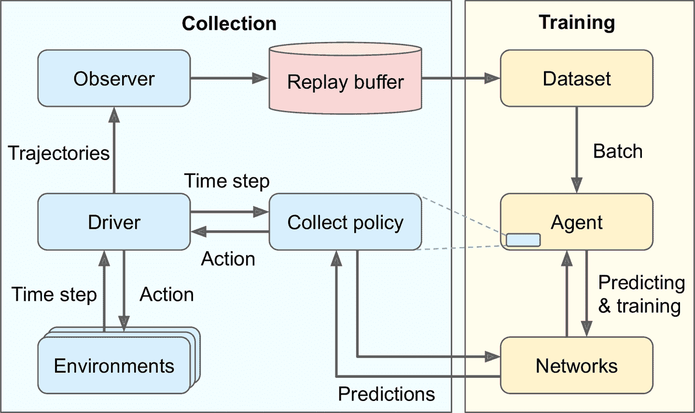
图 18-13 一个典型的 TF-Agents 训练架构
这张图有些疑惑点
-
为什么使用多个环境呢
？ ， 、 ， 。 -
什么是轨迹
？ ， n到时间步n+t的过渡。 ， ， 。 -
为什么需要观测器
？ ？ ， ， ， 。 ， ， ？ ， ， ？ ， 。 ， ， ， 。 ， ， 。
提示
尽管这个架构是最常见的 ： 但是可以尽情自定义 ， 可以更换成自己的组件 ， 事实上 。 除非是研究新的 RL 算法 ， 更适合使用自定义的环境来做自己的任务 ， 要这么做 。 需要创建一个自定义类 ， 继承自 ， tf_agents.environments.py_environment包的PyEnvironment类并重写一些方法 ， 比如 ， action_spec()、 observation_spec()、 _reset()、 _step()见笔记本的章节 Creating a Custom TF_Agents Environment （ ） 。
现在创建好了所有组件
创建深度 Q 网络
TF-Agents 库在tf_agents.networks包和子包中提供了许多网络tf_agents.networks.q_network.QNetwork类
from tf_agents.networks.q_network import QNetwork
preprocessing_layer = keras.layers.Lambda(
lambda obs: tf.cast(obs, np.float32) / 255.)
conv_layer_params=[(32, (8, 8), 4), (64, (4, 4), 2), (64, (3, 3), 1)]
fc_layer_params=[512]
q_net = QNetwork(
tf_env.observation_spec(),
tf_env.action_spec(),
preprocessing_layers=preprocessing_layer,
conv_layer_params=conv_layer_params,
fc_layer_params=fc_layer_params)
这个QNetwork的输入是观察lambda层将观察转换为 32 位浮点数8 × 8过滤器8 × 8过滤器8 × 8的过滤器activation_fn改变
QNetwork的底层包含两个部分EncodingNetwork类实现了多种智能体都使用了的神经网络架构
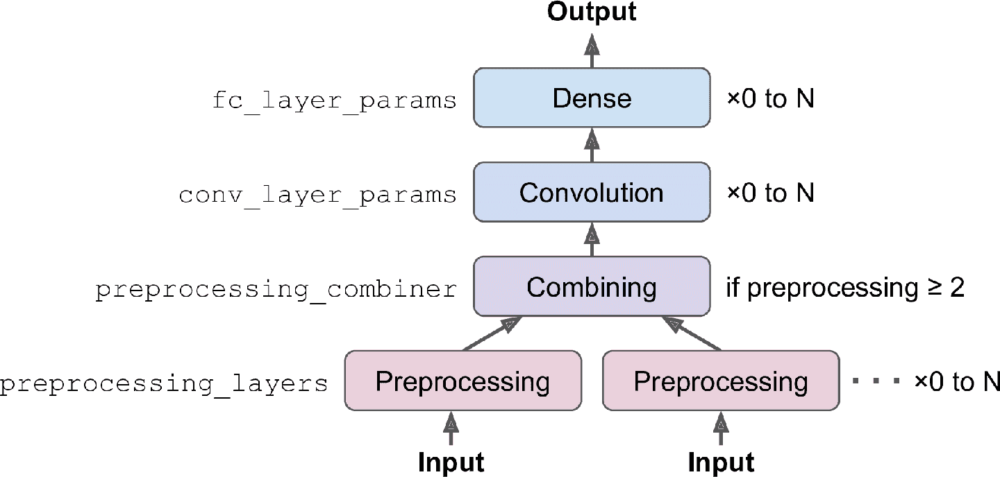
图 18-14 编码网络架构
可能有一个或多个输入preprocessing_layers参数指定 Keras 层列表preprocessing_combiner传入其它层
然后conv_layer_paramsfc_layer_paramsfc_layer_params是一个列表dropout_layer_paramsQNetwork将编码网络的输出传入给紧密输出层
笔记
： QNetwork类非常灵活可以创建许多不同的架构 ， 如果需要更多的灵活性 ， 还以通过创建自己的类 ， 扩展类 ： tf_agents.networks.Network像常规自定义 Keras 层一样实现 ， 。 tf_agents.networks.Network类是keras.layers.Layer类的子类前者添加了一些智能体需要的功能 ， 比如创建网络的浅复制 ， 即 （ 只复制架构 ， 不复制权重 ， ） 例如 。 ， DQNAgent使用这个功能创建在线模型。
有了 DQN
创建 DQN 智能体
利用tf_agents.agents包和它的子包tf_agents.agents.dqn.dqn_agent.DqnAgent
from tf_agents.agents.dqn.dqn_agent import DqnAgent
train_step = tf.Variable(0)
update_period = 4 # train the model every 4 steps
optimizer = keras.optimizers.RMSprop(lr=2.5e-4, rho=0.95, momentum=0.0,
epsilon=0.00001, centered=True)
epsilon_fn = keras.optimizers.schedules.PolynomialDecay(
initial_learning_rate=1.0, # initial ε
decay_steps=250000 // update_period, # <=> 1,000,000 ALE frames
end_learning_rate=0.01) # final ε
agent = DqnAgent(tf_env.time_step_spec(),
tf_env.action_spec(),
q_network=q_net,
optimizer=optimizer,
target_update_period=2000, # <=> 32,000 ALE frames
td_errors_loss_fn=keras.losses.Huber(reduction="none"),
gamma=0.99, # discount factor
train_step_counter=train_step,
epsilon_greedy=lambda: epsilon_fn(train_step))
agent.initialize()
逐行看下代码
-
首先创建计算训练步骤数的变量
。 -
然后创建优化器
， 。 -
接着
， PolynomialDecay， （ ， ） ， ε值。 （ ， ） ， ε值从 1 降到 0.01（ ） 。 ， （ ， ） ， ε值是在 62500 个训练步内下降的。 -
然后创建
DQNAgent， 、 QNetwork、 、 、 、 、 train_step、 （ ， train_step的原因） 。 ， ， ， reduction="none"。 -
最后
， 。
然后
创建接力缓存和观测器
TF-Agents 库在tf_agents.replay_buffers包实现了多种接力缓存py_tf_tf_agents.replay_buffers.tf_uniform_replay_buffer包追踪的TFUniformReplayBuffer类
from tf_agents.replay_buffers import tf_uniform_replay_buffer
replay_buffer = tf_uniform_replay_buffer.TFUniformReplayBuffer(
data_spec=agent.collect_data_spec,
batch_size=tf_env.batch_size,
max_length=1000000)
看一下这些参数
data_spec
- 数据的配置会存储在接力缓存中
。 ， collect_data_spec做数据配置。
batch_size
- 轨迹数量添加到每个步骤
。 ， ， 。 （ ， ） ， 。 ， （ ） 。 ParallelPyEnvironment（ tf_agents.environments.parallel_py_environment） ： （ ， ） ， ， （ ） ， 。
max_length
- 接力缓存的最大大小
。 （ ） 。 。
提示
当存储两个连续的轨迹 ： 它们包含两个连续的观察 ， 每个观察有四个帧 ， 因为包装器是 （ FrameStack4） 但是第二个观察中的三个帧是多余的 ， 第一个观察中已经存在了 （ ） 换句话说 。 使用的内存大小是必须的四倍 ， 要避免这个问题 。 可以使用包 ， tf_agents.replay_buffers.py_hashed_replay_buffer的PyHashedReplayBuffer它能沿着观察的最后一个轴对存储的轨迹去重 ： 。
现在创建向接力缓存写入轨迹的观测器add_method()replay_buffer对象
replay_buffer_observer = replay_buffer.add_batch
如果想创建自己的观测器trajectory的函数__call__(self, trajectory)的类\r和end=""保证展示的计数器处于一条线
class ShowProgress:
def __init__(self, total):
self.counter = 0
self.total = total
def __call__(self, trajectory):
if not trajectory.is_boundary():
self.counter += 1
if self.counter % 100 == 0:
print("\r{}/{}".format(self.counter, self.total), end="")
接下来创建一些训练指标
创建训练指标
TF-Agents 库再tf_agents.metrics包中实现了几个 RL 指标
from tf_agents.metrics import tf_metrics
train_metrics = [
tf_metrics.NumberOfEpisodes(),
tf_metrics.EnvironmentSteps(),
tf_metrics.AverageReturnMetric(),
tf_metrics.AverageEpisodeLengthMetric(),
]
笔记
训练或实现策略时 ： 对奖励做衰减是合理的 ， 这是为了平衡当前奖励与未来奖励的平衡 ， 但是 。 当周期结束时 ， 可以通过对所有未衰减的奖励求和来做评估 ， 出于这个原因 。 ， AverageReturnMetric计算了每个周期未衰减奖励的和并追踪平均值 ， 。
任何时候result()方法获取指标train_metrics[0].result()log_metrics(train_metrics)记录所有指标tf_agents.eval.metric_utils包
>>> from tf_agents.eval.metric_utils import log_metrics
>>> import logging
>>> logging.get_logger().set_level(logging.INFO)
>>> log_metrics(train_metrics)
[...]
NumberOfEpisodes = 0
EnvironmentSteps = 0
AverageReturn = 0.0
AverageEpisodeLength = 0.0
接下来创建收集驱动
创建收集驱动
正如图 18-13
-
驱动将当前时间步传给收集策略
， ， 。 -
驱动然后将动作传给环境
， 。 -
最后
， ， 。
一些策略policy_info中
另外
有两个主要的驱动类DynamicStepDriver和DynamicEpisodeDriverDynamicStepDriver
from tf_agents.drivers.dynamic_step_driver import DynamicStepDriver
collect_driver = DynamicStepDriver(
tf_env,
agent.collect_policy,
observers=[replay_buffer_observer] + training_metrics,
num_steps=update_period) # collect 4 steps for each training iteration
传入环境run()来运行RandomTFPolicy创建第二个驱动ShowProgress观测器展示进展
from tf_agents.policies.random_tf_policy import RandomTFPolicy
initial_collect_policy = RandomTFPolicy(tf_env.time_step_spec(),
tf_env.action_spec())
init_driver = DynamicStepDriver(
tf_env,
initial_collect_policy,
observers=[replay_buffer.add_batch, ShowProgress(20000)],
num_steps=20000) # <=> 80,000 ALE frames
final_time_step, final_policy_state = init_driver.run()
快要能运行训练循环了
创建数据集
要从接力缓存采样批次的轨迹get_next()方法BufferInfo对象
>>> trajectories, buffer_info = replay_buffer.get_next(
... sample_batch_size=2, num_steps=3)
...
>>> trajectories._fields
('step_type', 'observation', 'action', 'policy_info',
'next_step_type', 'reward', 'discount')
>>> trajectories.observation.shape
TensorShape([2, 3, 84, 84, 4])
>>> trajectories.step_type.numpy()
array([[1, 1, 1],
[1, 1, 1]], dtype=int32)
trajectories对象是一个命名元组observation字段的形状是[2, 3, 84, 84, 4]84 × 84 × 4step_type张量的形状是[2, 3]1, 1, 1
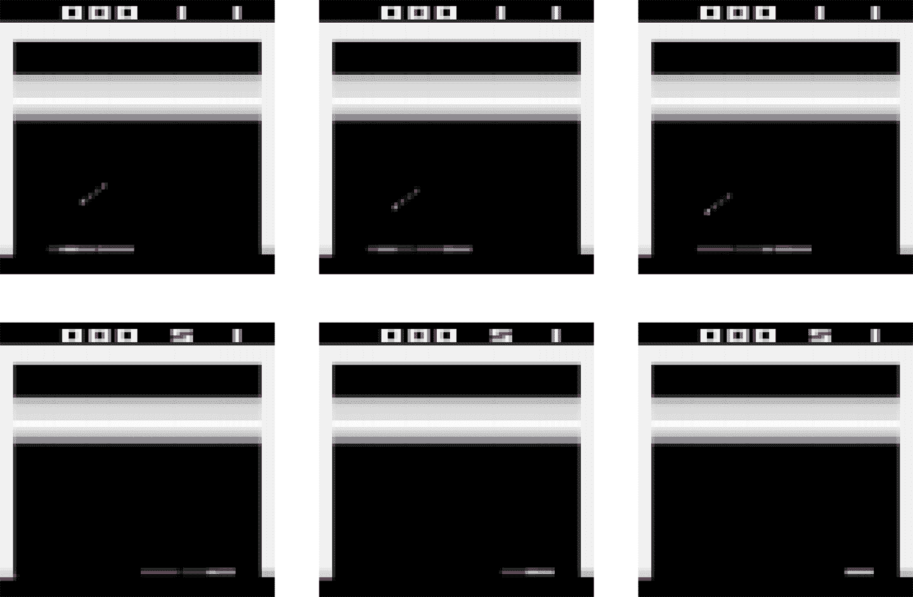
图 18-15 包含三个连续步骤的两条轨迹
每条轨迹是连续时间步和动作步的简洁表征n由时间步nnn+1组成n+1由时间步n+1n+1n+2 是重复的n个轨迹步只包括时间步n的类型和观察 的观察
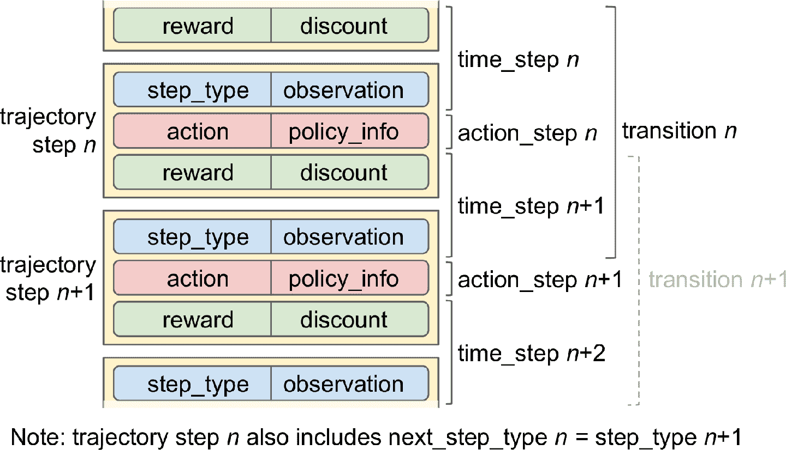
图 18-16 轨迹
因此t+1步骤n到时间步n+tn到时间步n+t的所有数据n的衰减n+t+1的奖励和衰减t过渡n到n + 1, n + 1到n + 2n + t – 1到n + t
模块tf_agents.trajectories.trajectory中的函数to_transition()将批次化的轨迹转变为包含批次time_stepaction_stepnext_time_step的列表t + 1个时间步之间有t个过渡
>>> from tf_agents.trajectories.trajectory import to_transition
>>> time_steps, action_steps, next_time_steps = to_transition(trajectories)
>>> time_steps.observation.shape
TensorShape([2, 2, 84, 84, 4]) # 3 time steps = 2 transitions
笔记
采样的轨迹可能会将两个 ： 或多个 （ 周期重叠 ） 这种情况下 ！ 会包含边界过渡 ， 意味着过渡的 ， step_type等于 2结束 （ ） ， next_step_type等于 0开始 （ ） 当然 。 TF-Agents 可以妥善处理这些轨迹 ， 例如 （ 通过在碰到边界时重新设置策略状态 ， ） 轨迹的方法 。 is_boundary()返回只是每一步是否是边界的张量。
对于主训练循环get_next()tf.data.Datasetas_dataset()方法
dataset = replay_buffer.as_dataset(
sample_batch_size=64,
num_steps=2,
num_parallel_calls=3).prefetch(3)
在每个训练步骤
笔记
对于策略算法 ： 比如策略梯度 ， 每个经验只需采样一次 ， 训练完就可以丢掉 ， 在这个例子中 。 你还可以使用一个接力缓存 ， 但使用接力缓存的 ， gather_all()方法在每个训练迭代获取轨迹张量 ， 训练完 ， 再动过 ， clear()方法清空接力缓存。
有了所有组件之后
创建训练循环
要加速训练tf_agents.utils.common.function()tf.function()
from tf_agents.utils.common import function
collect_driver.run = function(collect_driver.run)
agent.train = function(agent.train)
写一个小函数n_iterations次运行主训练循环
def train_agent(n_iterations):
time_step = None
policy_state = agent.collect_policy.get_initial_state(tf_env.batch_size)
iterator = iter(dataset)
for iteration in range(n_iterations):
time_step, policy_state = collect_driver.run(time_step, policy_state)
trajectories, buffer_info = next(iterator)
train_loss = agent.train(trajectories)
print("\r{} loss:{:.5f}".format(
iteration, train_loss.loss.numpy()), end="")
if iteration % 1000 == 0:
log_metrics(train_metrics)
这个函数先向收集策略询问初始状态policy_state = ()run()方法Nonetrain()方法train_losstrain_agent()做一些迭代
train_agent(10000000)
训练需要大量算力和极大的耐心
流行 RL 算法概览
本章结束前
演员评论家算法
- 将策略梯度和深度 Q 网络结合而成 RL 算法族
。 ： 。 。 ， ： （ ） （ ） 。 （ ） （ ） 。
异步优势演员评论家算法
- 这是 DeepMind 在 2016 年推出的重要的演员评论家算法的变体
， ， 。 ， ， 。 ， 。 ， ， ， 。
优势演员评论家算法
- A3C 算法的变体
， 。 ， ， 。
软演员评论家算法
- Tuomas Haarnoja 和其它 UC Berkeley 研究员在 2018 年提出的演员评论家变体
。 ， 。 ， ， 。 ， 。 ， 。 （ ， ） 。 。
近似策略优化
- 基于 A2C 的算法
， ， （ ） 。 （ ） ， 。 ， 。 。
基于好奇探索
- RL 算法中反复出现的问题是奖励过于稀疏
， 。 ： ， ？ ， 。 ， ， ， 。 ？ ， 。 ， 。 （ ） ， 。 ， ， ， 。 ， ： ， ， 。
这一章学习了许多主题
练习
-
如何定义强化学习
？ ？ -
你能想到什么本章没有提到过的强化学习的应用
？ ？ ？ ， ？ -
什么是衰减率
？ ？ -
如何测量强化学习智能体的表现
？ -
什么是信用分配问题
？ ？ ？ -
使用接力缓存的目的是什么
？ -
什么是 off 策略 RL 算法
？ -
使用策略梯度处理 OpenAI gym 的
“ ” 。 Box2D依赖（ python3 -m pip install gym[box2d]） 。 -
用任何可行的算法
， 。 -
如果你有大约 100 美元备用
， ， ， ！ ， ， 。 ， （ ） （ ） ， 。 ： ， ， ， 。 。
参考答案见附录 A